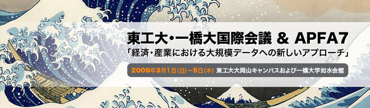
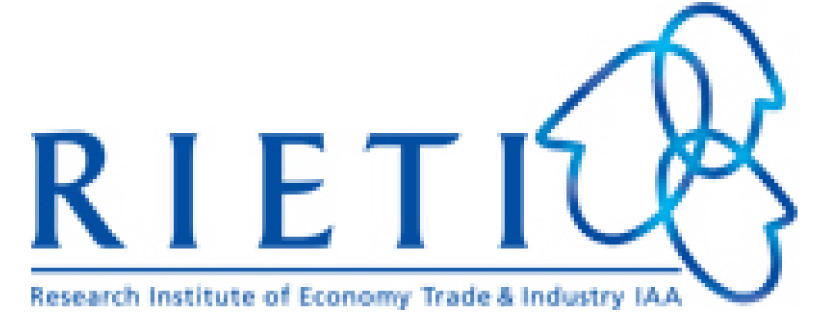

ねらい:
経済や産業が高度に情報化した現在、従来とは桁違いに膨大で詳細なデータが様々な形で企業に蓄積されている。例えば、株や為替などの金融市場における高頻度取引データ、小売における個別の商品ごとのレシート情報、企業間の取引や株保有などに関するネットワーク情報、などデータの種類は多種多様である。こうしたデータは、過去には経済学者や経営学者の分析対象であったが、近年は物理学者をはじめ理工系の研究者も優れた実績を挙げてきている。
本国際会議では、様々な分野で研究・開発されている経済・産業における大規模データの解析手法やモデル構築方法を、学術的で横断的な視点に立って総覧し、基盤技術を確立することをめざす。これらのデータを高速に分析・統合する技術は、単に個々の利益につながるだけでなく、複雑な社会システムの安定性を高める原動力にもなるものと期待される。
歴史:
APFA7: 第7回国際会議「物理学の金融データ解析への応用」
この会議のシリーズは、大規模な経済・金融データを物理学の手法を応用して解析することを目的として開催され、毎回、物理学者と経済学者を集め、研究成果の交流を行ってきた。
APFA1: 1999年ダブリン（アイルランド）、APFA2: 2000年リージュ（ベルギー）、APFA3: 2001年ロンドン（イギリス）、APFA4: 2003年ワルシャワ（ポーランド）、APFA5: 2006年トリノ（イタリア）、APFA6: 2007年リスボン（ポルトガル）。
THIC: 東京工業大学・一橋大学共催学際分野国際会議
今回の会議は、これまでヨーロッパで開催されてきたAPFA会議を東京で開催するものであり、東京工業大学と一橋大学が協同して開催する最初の学際分野国際会議として催される。
また、この国際会議の最終日には独立行政法人経済産業研究所が主催する形で公開シンポジウムが開催される。招待講演者による講演やパネルディスカッションによって、発表されたばかりの国際会議の成果が学生、研究者、企業の実務家を含む一般参加者に公開される。
| 日程 | 2009年3月1日（日）～5日（木） |
|---|---|
| 会場 | 東工大大岡山キャンパスおよび一橋大学如水会館 |
| 主催 | 国立大学法人 東京工業大学・国立大学法人 一橋大学 |
| オーガナイザー | 高安美佐子（東工大総理工）・渡辺努（一橋大経済研究所） |
| 協賛 |  独立行政法人経済産業研究所 |
| 後援団体 |
社団法人 日本経済学会 社団法人 社団法人 |
| 協賛企業 |
アストマックス 株式会社 |